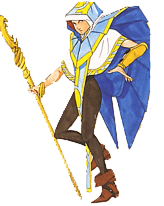

Comenzando 2019, nos embarcamos en la traducción de uno de los rpgs de Megami Tensei que salió para Game Boy color, Megami Tensei Gaiden: Last Bible.
Megami Tensei Gaiden: Last Bible, salió en Game Boy el 25 de diciembre en 1992 en Japón y en 27 de agosto de 1999 lo lanzaron en territorio americano bajo el nombre de Revelations: Demon Slayer y ahora, el 2 de Marzo de 2019, comienza su traducción al español.
Esta traducción es un proyecto que en el que colabora TraduSquare con el Proyecto Amala.

¿Habrá Demo?
Siendo un juego de Game Boy Color, es imposible que haya una demo de este juego, por lo que no podemos distribuir una.
¿Cuánto durará la traducción?
El otro día llamamos al servicio técnico de nuestra bola de cristal; la suya también esta estropeada y no son capaces de predecir cuándo vendrán a arreglar la nuestra. Así pues, solo podemos decir que la traducción estará tan pronto como la terminemos: tres meses, un año, una década… No lo sabemos, pero lo que sí sabemos es que cuanta más gente ayude, antes estará :P
Aun así, si tanto te gusta el juego, puedes seguirnos en nuestra cuenta de
Twitter.